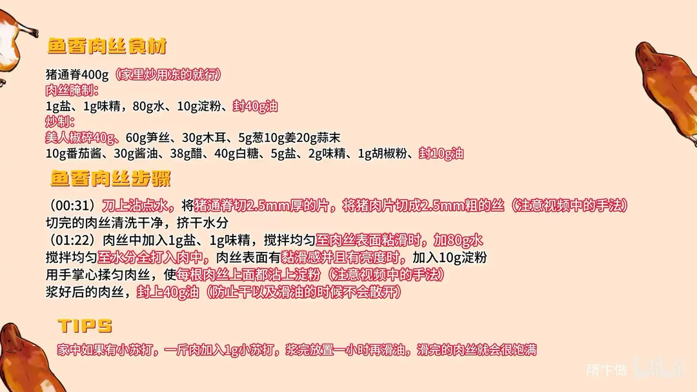
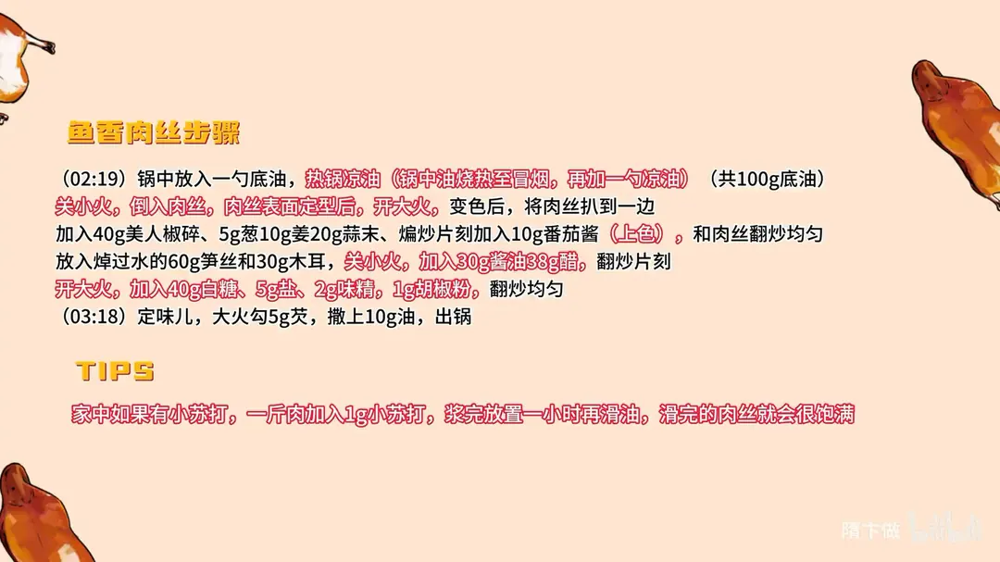

鱼香肉丝
隋卞一做。主料猪通脊 400g，家庭炒冻肉也行。核心是肉丝上浆打水，最终酸甜咸辣平衡。
原视频：https://www.bilibili.com/video/BV1qTypYkEjp
食材
猪通脊、盐、味精 等 20 样
| 类别 | 用料 | 用量 |
|---|---|---|
| 主料 | 猪通脊 | 400g |
| 肉丝腌制 | 盐 | 1g |
| 肉丝腌制 | 味精 | 1g |
| 肉丝腌制 | 水 | 80g |
| 肉丝腌制 | 淀粉 | 10g |
| 肉丝腌制 | 封油 | 40g |
| 炒制 | 美人椒碎 | 40g |
| 炒制 | 笋丝 | 60g |
| 炒制 | 木耳 | 30g |
| 炒制 | 葱 | 10g |
| 炒制 | 姜 | 20g |
| 炒制 | 蒜末 | 10g |
| 炒制 | 番茄酱 | 10g |
| 炒制 | 酱油 | 30g |
| 炒制 | 醋 | 38g |
| 炒制 | 白糖 | 40g |
| 炒制 | 盐 | 5g |
| 炒制 | 味精 | 2g |
| 炒制 | 胡椒粉 | 1g |
| 炒制 | 封油 | 10g |
步骤
- 切丝：刀上沾点水，猪通脊先切 2.5mm 厚的片，再切成 2.5mm 粗的丝。切完的肉丝清洗干净，挤干水分。
- 上浆：肉丝中加 1g 盐、1g 味精，搅拌至肉丝表面粘滑时，加 80g 水，搅拌均匀至水分全打入肉中。肉丝表面有黏滑感并且有亮度时，加 10g 淀粉，用手掌心揉匀，使每根肉丝都沾上淀粉。
- 封油：浆好的肉丝封上 40g 油，防止干以及滑油时散开。
- 滑肉：锅中放一勺底油，热锅凉油（油烧至冒烟后再加一勺凉油），关小火倒入肉丝。肉丝表面定型后开大火，变色后把肉丝扒到一边。
- 炒配料：加 40g 美人椒碎、5g 葱、10g 姜、20g 蒜末，煸炒片刻，加 10g 番茄酱上色，和肉丝翻炒均匀。
- 下配菜：放入焯过水的 60g 笋丝和 30g 木耳。
- 调味：关小火，加 30g 酱油、38g 醋，翻炒片刻；开大火，加 40g 白糖、5g 盐、2g 味精、1g 胡椒粉，翻炒均匀定味儿，大火勾 5g 芡，撒上 10g 油出锅。
小贴士
- 家中如有小苏打，一斤肉加 1g 小苏打，浆完放置一小时再滑油，滑完的肉丝会很饱满。
- 底油共 100g：滑肉用一勺，后面炒制再补一勺，不要一次全下。
讲解要点
难度：★★★☆☆（刀工和上浆打水是门槛，火候顺序错一步就出水）
为什么这么做
- 通脊化透再切、切完再洗：冻肉硬，刀下去打滑片不匀；2.5mm 的丝只有软肉才切得整齐，刀面沾水是防粘刀。洗完挤干，血水不带进浆里，滑出来才白净不腥。
- 盐味精先搅到发黏，再往里打水：盐让肉表面出黏性，才「抓」得住水；一次加足水搅到全吸进去，肉丝才饱满。顺序反了，水只会汪在盆里。
- 用手掌心揉淀粉，不是搅拌：揉能把粉压进肉丝表面，根根挂一层薄浆；搅拌容易搅断丝、上浆还不匀。
- 浆好封一层油：油膜隔住空气防止风干，滑油时肉丝一根根散开，不抱团。
- 热锅凉油、小火下肉：锅烧到冒烟再下凉油，锅壁被油润透才不粘；小火让表面慢慢定型，一上来就大火肉丝立刻发柴。
- 美人椒代替泡椒、番茄酱上色：家里没有鱼香泡椒，用美人椒补辣味和红色；番茄酱的酸比醋柔和，颜色也亮。
- 最后大火勾芡：糖醋汁只有挂了芡才能裹在肉丝上，不勾芡就是一盘汤水。
容易翻车
- 水一次倒太多、搅不进去，肉丝会「吐水」，下锅脱浆。
- 表面还没黏滑就下淀粉，粉挂不住，滑油时整层掉在锅里。
- 锅没烧透就下肉，或者下锅立刻开大火，肉丝粘连、发老。
- 糖醋比例失衡：40g 糖配 38g 醋是酸甜口，醋多了发呛、糖多了发腻。
热评补充
- 配菜可以按地方习惯换：北方家常版常用胡萝卜丝、蒜薹、木耳，往南走则换笋丝；手边没有笋，用脆口的根茎类替也一样。
原片尾卡


原片文案
AI 字幕校准稿
我知道你们看见标题一定会点进来，毕竟这世界上谁不爱鱼香肉丝。今天做的是超级不正宗版。本来想给大家做正宗版，但正宗版必不可少的一样调料是鱼香泡椒，这个东西一般家里都不备。我就想着，能不能用家里边有的东西，给你们做一个鱼香肉丝——超级不正宗，但肯定好吃。
选猪通脊，要化开的，不是冻的，你看是柔软的。切的时候刀上沾点水，手按着后边，看这刀的动作：往前一推，往旁边一摆，肉丝就过去了。我今天为了耍个小刀工，多少年都不切肉丝了，但看手里的活还没落下。
切好的肉丝搁水里稍微洗一下，洗完以后控水。加盐、味精一搅拌，肉丝表面黏滑了，这时候少来一点水，把这个水给它打到肉里面去。我是怎么简单就怎么教你。
家里边如果有小苏打，一斤肉加一克，浆完放置一小时再滑油，滑完的肉丝就会很饱满。看表面已经有黏滑感，而且有亮度，这会儿就可以搁淀粉了，五克八克都行。注意手这动作，不是搅拌，是用手掌心揉这个肉丝，让它每根肉丝上面都沾上淀粉。如果你买的这肉一般，可以把刚才那水换成葱姜水。浆好之后封一层油，防止干，而且一会儿滑油的时候它不容易散开。
这是美人椒，全给它剁碎，代替泡椒，要那个辣味，还有颜色。放一勺底油——热锅凉油是什么概念呢？把锅烧热冒烟了，然后再放点凉油，这会儿火就关小火，把腌好的肉丝倒到锅里边。
表面一定型，上大火，变色之后把肉丝扒拉一边去。美人椒倒进去，葱姜蒜煸炒，里边放点番茄酱，番茄酱是上色用的，炒香之后放到一起。
放入焯过水的笋丝和木耳。关小火，酱油、醋；开大火，白糖、盐、味精、胡椒粉，好，定一下味。大火勾芡，来点明油，出锅。
你说它是鱼香肉丝吧，它是；说不是吧，它也不是，属于是与不是的叠加态，但是非常之好吃，无敌下饭。甜辣咸酸给得很直白，肉丝有口感，肉香味也在；笋丝、木耳的那种脆，搭配得非常之好。再加上咱勾了个芡，整个黏黏糊糊的。
除了发酵那个味儿之外，其他应该里面都有。这跟我们外面吃的多少还是有点区别，而且那个番茄酱的酸是更柔和一点点的，完全在外面没有吃过这种味道。这个米饭弄得太对了，四勺干了一碗饭。